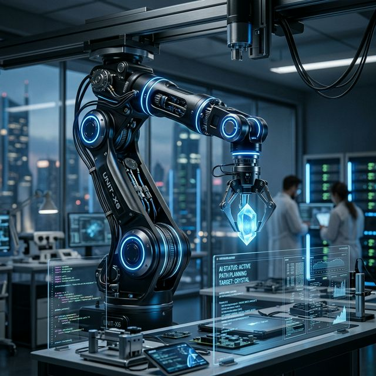

The Concept
Robotics meets machine learning. This project focuses on building a low-cost, open-source robotic arm that can perform tasks autonomously based on visual feedback.
Key Features
- 3D printed claw and arm structure for easy replication.
- Servo control using Arduino and Raspberry Pi.
- AI-driven object localizaton and grasping logic.
- Python-based control interface for high-level commands.
Implementation Detail
The bot uses a neural network trained to recognize various objects on a flat surface, calculating the precise joint angles needed for a successful grasp.